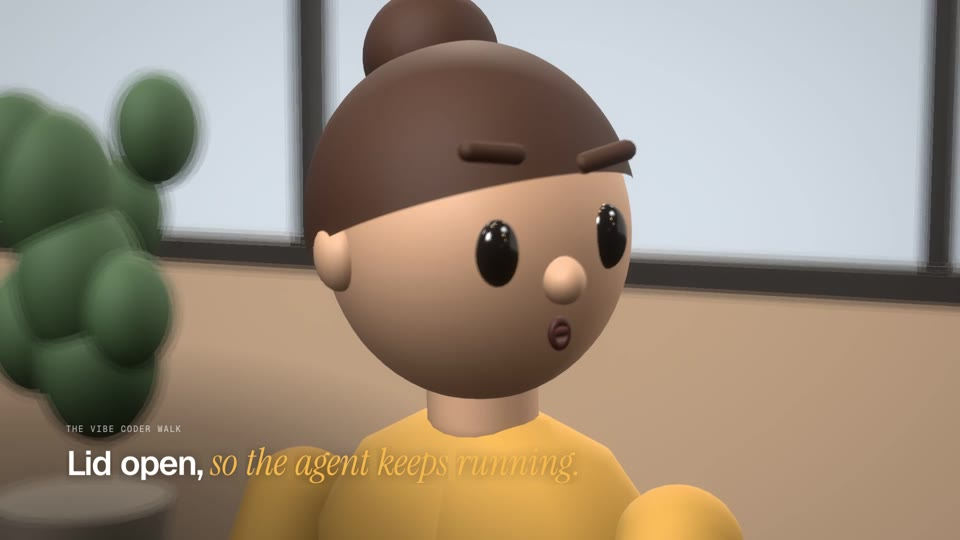
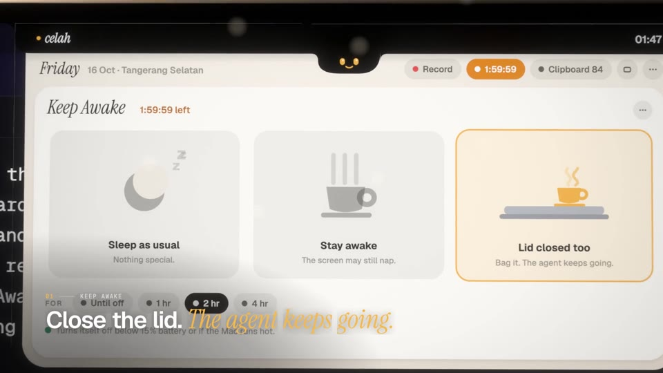
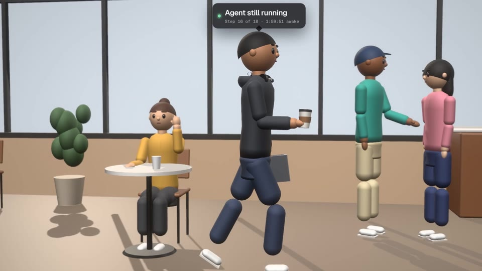

Close the lid. The agent keeps going.
Stay awake, or stay awake with the lid shut, for 1, 2, 4 hours or until you say so. It turns itself off below 15% battery or when the Mac runs hot. Set up once, never asked for a password again.
Celah (Indonesian for the gap) turns the MacBook notch into a board for vibe coders. Keep your agent running with the lid closed, watch your AI limits, read a verse instead of doomscrolling. All one hover away.
curl -fsSL https://raw.githubusercontent.com/arifinrio95/celah/main/install.sh | bashYou know the walk. Closing the lid kills the agent, so you carry the MacBook open across the café. Then you wait, and scroll. Celah fixes the first and gently replaces the second.



Stay awake, or stay awake with the lid shut, for 1, 2, 4 hours or until you say so. It turns itself off below 15% battery or when the Mac runs hot. Set up once, never asked for a password again.
Five-hour and weekly windows for Claude and Codex, with reset times. Bars turn amber, then red.
One ayah at a time in Uthmani script with translation, your place saved. Want more? Mushaf Mode opens a big reading window: Ayah or Surah view, all 114 surahs, adjustable script, arrow keys.
⤢ Mushaf ModeKemenag method, 27 Indonesian cities or GPS, gentle reminders before each prayer.
Projects, four lanes, quick add. Tick a task and it pops to the next lane.
Text and images, searchable, pinnable. Password-manager items are never kept.
The record slides out of its sleeve and spins while it plays. Play, skip, scrub.
System audio and mic as two files. One click opens Claude Code with the folder and prompt ready.
Three rings, always there. Tap Apps for the details.
Every running app with its CPU and memory, helper processes counted in, heaviest first. Sort by memory or CPU. Quit asks “Force Quit?” before it acts, so nothing closes by accident.
Check your face before the call. Ring light included. The camera runs only while the mirror is open.
Some people only pass the notch on the way to the menu bar. Settings › Notch lets the board open instantly, after a beat of hover, or only when you click. The creature still peeks while it waits.
The physical notch is a hole in your screen, so Celah treats it as one. The lid stretches around it, the creature sits in a chin just below it, and every label and button stays on either side, measured from your Mac’s real notch. Pick Porcelain (paper under the black notch) or Ink (smoked glass).
Run the one-liner above, or grab Celah.zip and move Celah.app to Applications.
Celah isn’t notarized yet. The installer clears the quarantine flag; by hand, right-click Celah.app › Open the first time.
Music control, notifications, and only if you want them: location, microphone, camera for the mirror, accessibility for auto-paste.
No servers of our own, no analytics, no account. For AI usage Celah reads the sign-ins already on your Mac (Claude Code’s Keychain item, Codex’s ~/.codex/auth.json) and sends each one only to its own provider to ask for your usage.
The first time, it asks for your administrator password once to install /etc/sudoers.d/celah-pmset, which allows exactly pmset -a disablesleep 0/1 and nothing else. Sleep is restored when you turn it off or quit, when the battery drops below 15%, or when the Mac runs hot. Delete that file to revoke.
Settings › Notch › Open the board: instantly, after 0.3, 0.6 or 1 second of hover, or only when you click the notch. With click-to-open, the menu bar around the notch keeps working as usual.
No. The mirror only shows the live camera on your screen. Nothing is saved or sent, and the camera turns off the moment you close the mirror or the board.
Yes. On displays without a notch the board hangs from the top centre of the screen. It shines on a MacBook with one.
Celah is built for Apple silicon and needs macOS 14 Sonoma or newer. You can build it yourself from source with the Xcode Command Line Tools.
Run claude auth login once in Terminal. Celah reads the same sign-in Claude Code uses.